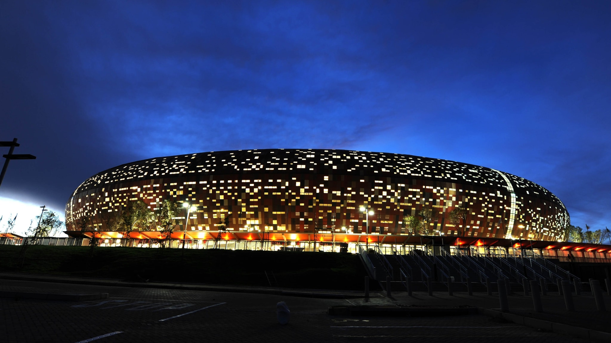

Mundial Sudafrica 2010
| Principal | Japon y Corea 2002 | Alemania 2006| Sudafrica 2010| Brasil 2014| Rusia 2018| Qatar 2022| Mundiales de la historia |
Sudáfrica viviría el fútbol total de la Selección Española, que se se proclamaría campeona del mundo por primera vez en su historia tras arrasar con su 'tiki-taka'. Con un juego de toque que encandiló al mundo entero, La Roja se impuso en la prórroga de la final, disputada en el Soccer City de Johannesburgo, a Holanda con un gol de Andrés Iniesta que ya es historia del deporte.
